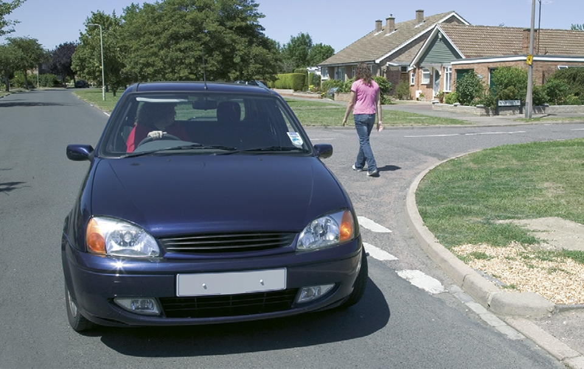

Using the road (159 to 203)
6. Reversing (200 to 203)
200
Choose an appropriate place to manoeuvre. If you need to turn your vehicle around, wait until you find a safe place. Try not to reverse or turn round in a busy road; find a quiet side road or drive round a block of side streets.
201
Do not reverse from a side road into a main road. When using a driveway, reverse in and drive out if you can.
Choose an appropriate place to manoeuvre. If you need to turn your vehicle around, wait until you find a safe place. Try not to reverse or turn round in a busy road; find a quiet side road or drive round a block of side streets.
201
Do not reverse from a side road into a main road. When using a driveway, reverse in and drive out if you can.

Rule 202: Check all round when reversing
202
Look carefully before you start reversing. You should
Reverse slowly while
Get someone to guide you if you cannot see clearly.
203
You MUST NOT reverse your vehicle further than necessary.
Law CUR reg 106
Annex 4 - The road user and the law >>
Look carefully before you start reversing. You should
- use all your mirrors
- check the ‘blind spot’ behind you (the part of the road you cannot see easily in the mirrors)
- check there are no pedestrians (particularly children), cyclists, other road users or obstructions in the road behind you.
Reverse slowly while
- checking all around
- looking mainly through the rear window
- being aware that the front of your vehicle will swing out as you turn.
Get someone to guide you if you cannot see clearly.
203
You MUST NOT reverse your vehicle further than necessary.
Law CUR reg 106
Annex 4 - The road user and the law >>